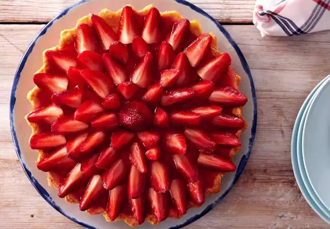

<!DOCTYPE html>
<html lang="en">
  <head>
    <meta charset="UTF-8" />
    <meta http-equiv="X-UA-Compatible" content="IE=edge" />
    <meta name="viewport" content="width=device-width, initial-scale=1.0" />
    <title>Tarta de frutillas</title>
  </head>
  <body style="background-color: darkorange;"></body>
    <hr />
    <h1 style="background-color: darkgreen;"> TARTA DE FRUTILLAS</h1>
    <hr />
    <h2>Ingredientes:</h2>
    <hr />
    <ul>
      <b>Masa</b>
      <li>Harina 0000 250 g.</li>
      <li>Manteca 100 g</li>
      <li>1 Cdita esencia de vainilla</li>
      <li>135g. de azúcar</li>
      <li>1 huevo</li>

      
      <hr />

      <b>Crema pastelera:</b>
      <li>250 ml de leche</li>
      <li>55 grs de azúcar</li>
      <li>Cascaras de limón</li>
      <li>2 yemas</li>
      <li>20 grs de maicena</li>
    </ul>

    <hr />

    

    <p></p>
    <a href="https://youtu.be/bVnRg0DDbis" target="_blank"
      ></a>


<p></p>

<a href="../RECETAS.html"></a>


  </body>
</html>
